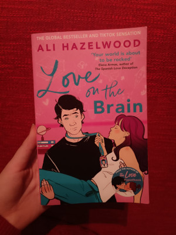
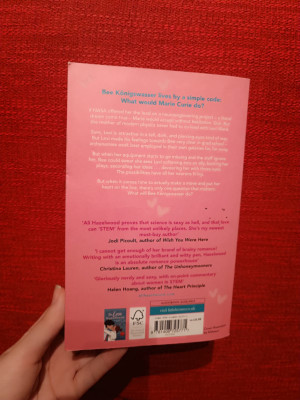
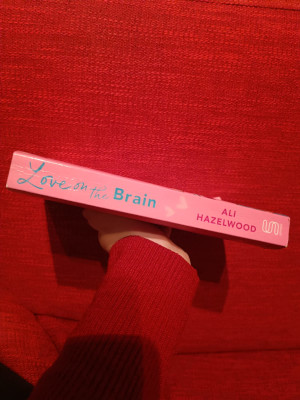

Sadržaj
Žene u STEM-u su zakon!
Glavna junakinja ovog romana Bee Königswasser živi s jednostavnim životnim motom:
Što bi Marie Curie napravila? Kada je jednoga dana dobila ponudu od NASA-e za vođenje jednog neuroinženjerskog projekta,
Bee je bila oduševljena dok nije saznala kako će njezin partner biti njezin veliki neprijatelj iz srednje škole - Levi Ward.
Bee nije željela propustiti ovu životnu priliku, pa ju je odlučila prihvatiti bez obzira na to što će morati raditi s osobom
koju nikako ne voli. Međutim, Levi se dosta promijenio, te se sprijateljio s Bee nakon što njezina oprema za projekt ne bude
dostavljena na vrijeme. Hoće li se dogoditi nešto više između ovo dvoje starih znanaca, i kako se sve završava, saznat ćete ako
pročitate ovu knjigu.
Glavni likovi
Bee Königswasser
Bee je žena koja obožava STEM kao i lik i djelo Marie Curie. Naizgled možda ne izgleda tako (zbog njezine ljubičaste kose , tetovaža i piercinga), ali Bee je jedna od najboljih neuroznanstvenica!
Levi Ward
Levi je jedan od najboljih inženjera u svojoj tvrtci. Naizgled vrlo hladan i nedostupan, ali u njemu se krije jedan pravi emotivac!
Ovo su poglavlja u knjizi Love On the Brain:
- The Habenula: Disappointment
- Vagus Nerve: Blackout
- Angular Gyrus: Pay Attention
- Parahippocampal Gyrus: Suspicion
- Amygdala: Anger
- Heschl's Gyrus: Hear, hear
- Orbitofrontal Cortex: Hope
- Precentral Gyrus: Movement
- Medial Frontal Cortex: Maybe I was wrong?
- Dorsolateral Prefrontal Cortex: Untruths
- Nucleus Accumbens: Gambling
- Ventral Striatum: Yearning
- Superior Colliculi: Will you look at that?
- Periaqueductal Gray and the Hippocampus:
Painful memories
- Fusiform Area: Familiar faces
- Subthalamic Nucleus: Interruptions
- Pulvinar: Reaching and Grasping
- Raphe Nuclei: Happiness
- Basolateral Amygdala: Arachnophobia
- Ventral Tegmental Area: Romantic love
- Right Inferior Frontal Gyrus: Superstition
- Anterior Cingulate Cortex: Oh, Sh*t
- Amygdala, again: Fear
- Right Temporal Lobe: AHA!
- Oriens-lacunosum Moleculare Interneurons: Courage
- Epilogue



Knjiga je objavljena u prosincu 2022. , što je razlog zašto imam englesku verziju, jer hrvatska još nije dostupna. Nije bila dostupna kada sam ju ja kupovala!